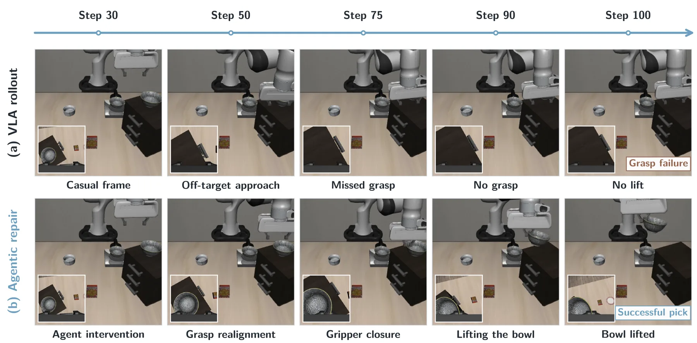
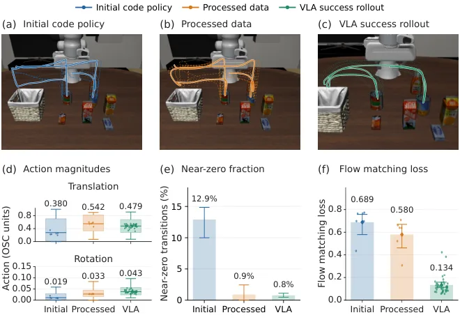
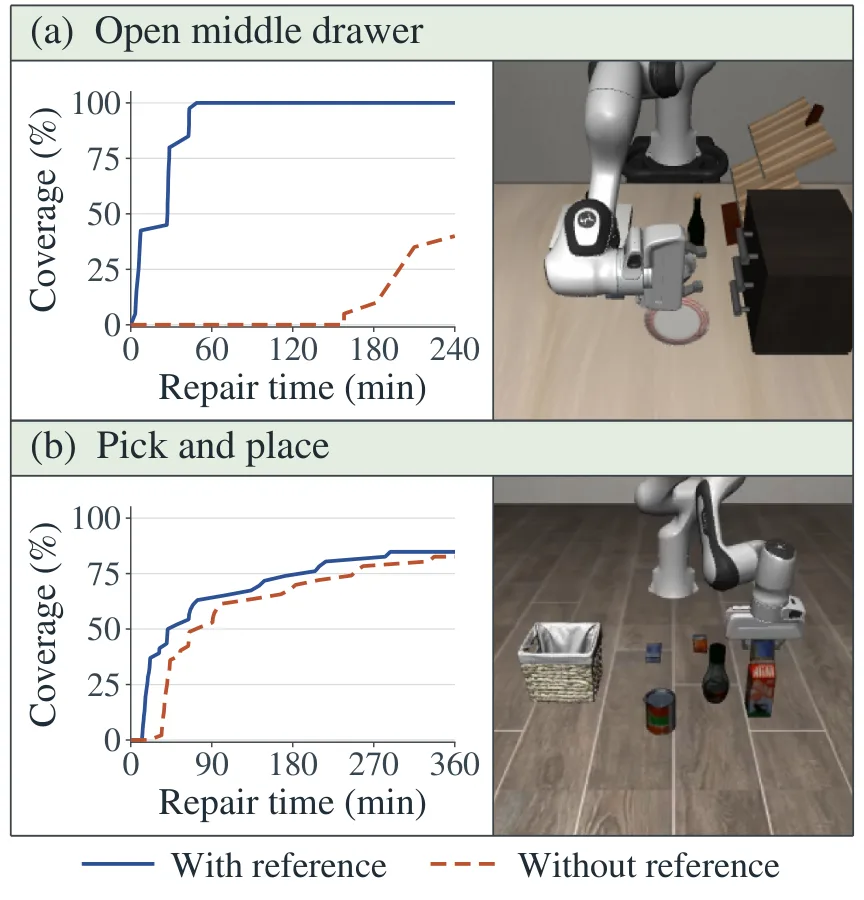

Agentic-Teacher：面向 VLA 失败驱动后训练的智能体数据引擎
Agentic-Teacher: An Agentic Data Engine for Failure-Driven VLA Post-Training
一句话：它把 DAgger 里“人来纠正”的那一环换成“写程序来纠正”，但真正的贡献在于后半段——把程序生成的轨迹重新投影回基模型的流形上（噪声扩覆盖、删冗余、用冻结模型的 flow-matching 损失做准入）。这三步里最后一步最值得抄：它给了一个用模型自身损失判断“这条合成数据是否可学”的廉价判据。
LIBERO-10 success
RoboCasa average success
Full-pipeline ablation
作者、单位与技术谱系 · Research context
作者与单位
研究脉络
- DAgger 及其人机协同变体方法基座关系：问题的提法直接来自 DAgger：在策略自己访问到的状态上取专家动作；本文把“专家”从人换成程序，把“人工接管”换成“因果帧定位 + 代码策略”。[论文 §1、§2]
- CaP-X / Harness VLA方法上游关系：工具栈与“把冻结 VLA 当可调用原语”的执行范式都沿用这条线，本文在其上加失败诊断与数据筛选。[论文 §1、§2 与参考文献 [Fu 2026]、[Zhang 2026]]
- 本篇推进：从“能修”到“能学”本篇推进关系：前作多在证明程序能让任务成功，本文追问“程序成功之后的数据是否适合 VLA 学习”，并给出噪声、冗余、兼容性三道处理作为答案。[论文 §1、§3.3、§4.3]
合作网络
- 清华大学 ↔ Striding AI ↔ AGIBotTsinghua University → Striding AI、AGIBot关系：共同署名[论文 HTML 作者与单位栏]
- Agentic-Teacher ↔ CaP-X 工具栈Agentic-Teacher（本篇） → CaP-X（Fu 等，2026）关系：技术依赖[论文 §2 与参考文献 [Fu 2026]]
- Agentic-Teacher ↔ π0Agentic-Teacher（本篇） → π0（Black 等，2024）关系：技术依赖[论文 §3.3、§4.1 与参考文献]
三家单位对全部作者并列标注，故只记录共同署名这一条事实边，不推断个人所属；两条技术依赖均直接写在正文中。
方法本质拆解 · What actually changed
是不是微调？
是对 π0 的后训练（继续用其 flow-matching 目标微调），不是从头训练，也不是只做提示工程。训练数据 = 初始 50 条 rollout 中的成功轨迹 + 修复程序生成并经三步处理的纠正轨迹；报告把学习率、批大小与训练预算放在附录 D，正文只给“每任务 50 次评测、种子分离”的协议。编码智能体（GPT-5.6 Sol，reasoning effort=high）只在数据生产阶段出现，更新后的策略独立评测。
有没有额外约束？
数据侧有三条硬约束：动作噪声只加在机械臂维度、夹爪指令保持不变（避免破坏抓取语义）；空闲帧按 1 mm 平移 / 3 mrad 旋转 / 0.1 mm 手指位移阈值删除，但保留夹爪切换；轨迹必须通过冻结基模型的 flow-matching 损失过滤（异常高分被剔除）。流程侧另有约束：修复起点必须是经 harness 重建并与原始 rollout 校验通过的因果帧之前状态，重建失败会被退回重新诊断。
推理/后端到底做了什么？
推理阶段没有任何智能体或程序参与：更新后的 VLA 独立运行，按自己的 flow-matching 策略出动作块，评测用与修复采集不同的随机种子、相同初始化。数据生产阶段则相反：harness 负责恢复起始状态、取观测、调工具、判定完成，并把每条 rollout 与产生它的程序和起始状态绑定，供智能体比较与继续探索。
方法本质是什么？
本质是把“纠正监督”的来源从人换成可验证的程序，再用基模型自身的损失把程序轨迹重新投影回模型能学的分布上——它解决的不是策略容量，而是训练数据的覆盖与兼容性。它没有做的是：没有新网络结构、没有新奖励设计、也没有在线 RL；对“哪些失败模式修不了”只给出技能库覆盖这一解释，没有可预测的判据。
输入一个 VLA checkpoint + 任务说明 + 环境工具，改变的是纠正数据的来源与准入方式（程序修复 + 冻结模型损失过滤），动作是诊断因果帧、合成并验证闭环代码策略、再对轨迹做噪声/冗余/兼容性三道处理，直接效果是在基模型完全失败的任务上也能造出可用监督并把成功率抬起来。

桥接价值Bridge
桥接价值
它把“数据从哪来”和“数据能不能学”分成两个独立问题：前半段用编码智能体在失败状态上现场造修复程序，后半段用基模型自身的损失决定哪些轨迹准入。对做可靠估计的人，第二半段更可迁移——我们同样经常面对“合成/仿真/渲染出来的数据，看起来对但学进去会偏”的问题，而这里给的是一个不依赖人工标注的一致性判据。第一个半段也有对应物：因果帧定位（把失败回溯到更早的抓取不稳，而不是在放置阶段硬修）与我们在 SLAM 里做失败归因（是前端匹配、后端约束还是标定）是同一类“先定位再修”的工作流。
方法与模块Method
方法摘要
三段流水线。第一段 rollout 与失败诊断：编码智能体看指令、相机观测与动作轨迹，定位导致失败的因果帧（可取失败交互之前的状态作为修复起点），再把失败按因果帧、失败阶段与成因聚成“失败模式”。第二段代码策略探索：对每个失败模式检索技能库与示例程序，写出闭环代码策略，在共享 harness 上小批测试、按视频与动作轨迹修改，通过后扩到该模式更多起始状态；成功的程序与技能进经验库。第三段数据处理与后训练：对成功执行注入时间相关动作噪声（只改机械臂，夹爪指令不动）以扩大覆盖，按相邻帧差分删空闲帧（平移 >1 mm、旋转矢量分量 >3 mrad、手指位移 >0.1 mm 判为非空闲），再用冻结基模型的 flow-matching 损失打分剔除异常轨迹，最后与成功 rollout 合并微调。
可迁移模块
第一是“用基模型自身损失做数据准入”：s_base(τ) 把轨迹的动作块在噪声插值下与冻结模型的预测速度做均方误差，只统计物理动作维度，高分说明该轨迹偏离基模型的流形——这个判据不需要标签、不需要额外网络，可以直接搬到我们筛选渲染视图或仿真序列的场景。第二是冗余判定阈值（1 mm / 3 mrad / 0.1 mm），给了一个把“几乎没动的帧”量化掉的现成口径。第三是评测单位：它不只报总成功率，还按失败模式报修前/修后发生率（例如把手对不齐 22%→0%、第二锅接近受阻 10%→8%），这种“分阶段指标”比单一成功率更能说明修复是否真的生效。

证据Evidence
关键证据与数字
主结果（每任务 50 次评测、评测初始化与修复数据采集用不同随机种子）：π0 在 LIBERO-10 上 79.4%→87.8%（RFT 只到 81.4%），MetaWorld-10 上 80.4%→90.6%（RFT 85.2%），三个 RoboCasa 任务上 0%→30.0%（RFT 因基模型没有任何成功轨迹而无法应用）。处理流水线消融（LIBERO，训练第 4,000 步）：原始代码轨迹 0.0%，加噪声注入 81.0%，再删空闲帧 89.0%，再加 flow-matching 过滤 95.0%；最后一步把轨迹数从 120 降到 110 反而更准，说明“筛掉不合适的示范”比“多给数据”更有效。采集效率：每个任务 400 次尝试内平均得到 139 条成功轨迹，同设置下报告的 PPO 基线为 0 条。
边界与下一步Limits & Next Step
边界与风险
作者明确承认三点：修复能力受技能库覆盖限制，复杂末端控制或精细操作仍难修；修复数据质量本身会带来坏习惯，“任务成功”不等于“监督有用”；每次修复都要重放到因果帧，真机上意味着复位场景并重演前序动作，成本高。我们的待核验项：主实验只用了 π0 一个基模型与 GPT-5.6 Sol 一个编码智能体，两者都与结果耦合，换模型后增益是否保持未知；作者在结论里自己写了“完成各组件消融与匹配成本比较才能确定哪些设计带来增益”，也就是目前还没有与人工 DAgger 的等价成本对照；RoboCasa 的 30% 仍是低绝对值，且三个任务的具体难度未给出。消融全部在 LIBERO 上做，跨基准的组件贡献未知。
下一步实验
第一，把 flow-matching 准入判据单独拿出来做阈值扫描：固定轨迹集，只改过滤阈值，画“保留率—下游成功率”曲线，确认收益来自判据而不是删数据本身。第二，换基模型（例如另一族 VLA）重跑同一流水线，检查“失败模式诊断 + 程序修复”是否仍优于 RFT，这是判断它是否只是“给 π0 定制的数据增强”的关键。第三，把它接到我们自己的合成数据链路上：用渲染/仿真视图替代代码策略轨迹，只保留 s_base 过滤这一步，看能否用同一判据筛掉低质量视图——这是一个成本很低、结论很直接的迁移实验。



